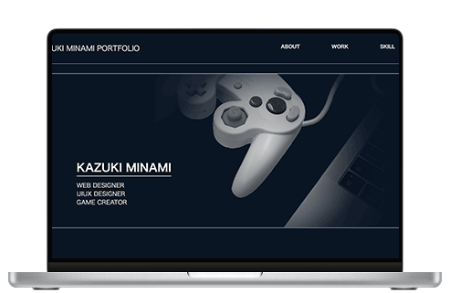

制作期間：2025年11月10日 ～ 現在
作業範囲：デザイン / コーディング

ポートフォリオサイト
自身のことややってきたことを伝えるためにポートフォリオを制作。
デザインカンプからコーディングまで行いました。
使用ソフト・プログラミング言語
- Photoshop
- Figma
- HTML
- CSS
意識したこと
- このポートフォリオを見ただけで自分という人物がどんな人間であるのかがわかるようにしました。
- 文字の優先順位をつけるために、文字サイズや余白を調整しました。
- デザイン以外にもプログラミングやゲーム開発などさまざまなことの取り組んでいることを伝わるようにしました。